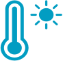

By analyzing open data sources, we aim to save millions of lives by accurately predicting onsets of epidemic risks and triggering alerts for preventative measures.
The Problem
In 2015, almost half a million people died from malaria.
The best defense is time: disease must be caught as early as possible and curbed before outbreaks become severe.
But what if we can predict outbreaks before they even happen?
Our Solution
Precipitation Levels

Temperatures
 Machine Learning
Machine Learning
Mosquito Breeding Patterns
Location Elevation
Carrier Reports
By reading weather patterns and climate changes, we can predict onsets of epidemics before they even happen.
1. Predict onset of illness by analyzing data sources
2. Promptly alert and prepare appropriate medical services
3. Stifle and curb illness as early as possible to avoid epidemic